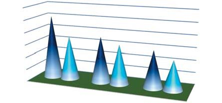
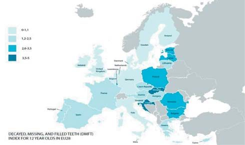
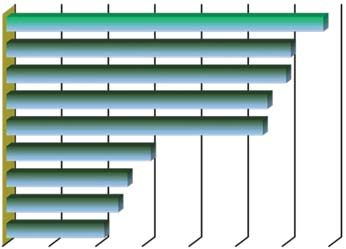
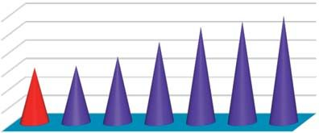
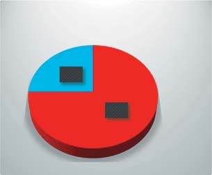
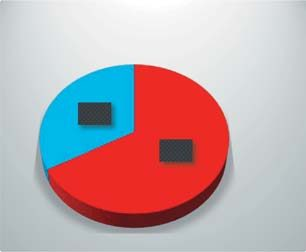
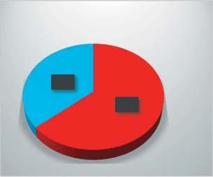
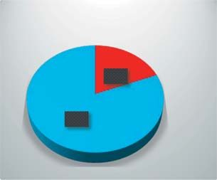

Профілактика · журнал «ДентАрт» 2020 №1
Перспективи повної ліквідації карієсу зубів і хвороб періодонту
A Complete Elimination Perspective for Dental Caries and Periodontal Disease
У статті зроблено метааналіз міжнародної наукової літератури й даних власних досліджень клінічної ефективності програм первинної та вторинної профілактики основних стоматологічних захворювань — карієсу зубів і хвороб періодонту. Встановлено, що завдяки програмам профілактики за 40–45 років інтенсивність карієсу в дітей зменшилася у 2–10 разів, досягнувши 0,6–2,5 КПВ у групі 12 років, проте серед дорослих ці досягнення мало помітні.
Перспективи повної ліквідації основних стоматологічних захворювань слід розглядати з урахуванням чотирьох проблем: етіологія карієсу й хвороб періодонту до кінця не розкрита; успіхи первинної профілактики карієсу постійних зубів у дітей обмежені; понад 40-річний період комунальних програм не дав переконливого зменшення карієсу у групі 35–44 років; профілактичні заходи мають вартість, яка може перевищувати бюджет на лікування.
Етіологія карієсу й хвороб періодонту
Більшість фахівців підтримують теорію карієсу Міллера (1890) з урахуванням природних і соціальних факторів. Для практичних лікарів автор пропонує максимально простий алгоритм: карієс виникає внаслідок впливу органічної кислоти мікробного зубного нальоту на мінеральні структури зуба; демінералізації перешкоджає ремінералізація емалі компонентами ротової рідини, а сама емаль може бути резистентною завдяки фторидам. Складніша історія з хворобами періодонту: запалення ясен виникає від токсинів бактерій нальоту, проте повне видалення нальоту неможливе, а в альвеолярних відростках відбуваються незворотні вікові зміни (рецесія ясен, оголення коренів). Тож профілактика хвороб періодонту фактично обмежена нашими можливостями впливу на процеси старіння.





Успіхи первинної профілактики карієсу в дітей
Пік інтенсивності карієсу в групі 12 років у Західній Європі спостерігався у 1960–1970-х, у Східній Європі — у 1980–1990-х. У Білорусі максимальне КПВ 3,8 було зареєстроване 1995 року; завдяки державній програмі за 20 років КПВ знизилося до «низького» рівня — 2,4 у 2016 році (на 37 % нижче), а в окремих школах Мінська й Бобруйська — до рекордних 1,6.
| Країна / місцевість | КПВ | Дослідники |
|---|---|---|
| Білорусь | 2,4 | Т. Терехова, Є. Мельникова, 2016 |
| м. Мінськ | 1,8 | С. Гунько і співавт., 2017 |
| м. Мінськ | 1,6 | Ю. Зайцева, 2019 |
| Школа №24 м. Мінська | 1,6 | Л. Жугіна і співавт., 2013 |
| м. Бобруйськ | 1,7 | А. Ковалевська і співавт., 2019 |
Залежність ефективності комунальних програм від початкових значень КПВ добре видно на прикладі трьох сусідніх країн — Білорусі, Польщі та України. У 1980–90-х найвищий рівень (5,1) був у Польщі; за 25–30 років він зменшився в 1,5 раза до 3,5, але лишається найвищим серед сусідів. Наочні докази ліміту зниження — дані регіонів з оптимальним вмістом фтору в питній воді (наприклад Полтава, де ураженість карієсом дуже низька понад 35 років). У країнах Західної Європи (Англія, Данія, Німеччина, Швеція) досягнуто рівня <1,0 КПВ — приблизно вдвічі нижче, ніж у Східній Європі.
Однак є проблема: групи дітей підвищеного ризику, у яких захворюваність завжди вища за середні показники. За SiC-індексом (найвища інтенсивність карієсу) у 1/3 12-річних школярів КПВ у 2–3 рази вищий за середній по когорті, що суттєво гальмує профілактику й на цьому етапі унеможливлює повну ліквідацію карієсу.




Вторинна профілактика
Конкретних комунальних програм вторинної профілактики у світі немає. В економічно розвинутих країнах дітей до 18 років лікують безплатно, що зводить до мінімуму видалення постійних зубів унаслідок ускладнень карієсу, а лікування дорослих здійснюється за зверненнями коштом пацієнтів. Важливо, що навіть «безкоштовне» лікування в СРСР не сприяло профілактиці ускладнень карієсу та адентії старших вікових груп.
Прогрес усе ж помітний: за анкетуванням 68 % 15-річних підлітків Мінська чистять зуби двічі на день (у Німеччині та Швейцарії — 85–90 %). Довготривалий моніторинг гімназії №36, де з 2003 року першокласникам організували щоденне контрольоване чищення зубів, показав значно кращі показники у випускників 2019 року порівняно з однолітками 16 років тому.
| Рік | Обстежених | Поширеність карієсу | Середній КПВ | OHI-S | GI |
|---|---|---|---|---|---|
| 2003 | 97 | 95 % | 6,11 | 1,97 | 0,6 |
| 2019 | 50 | 76,5 % | 3,05 | 0,6 | 0,3 |
У Мінську, де багато років діє державна програма первинної профілактики, компонент «К» (нелікований карієс) у формулі КПВ становить лише 19 %, що відповідає щорічному приросту нових порожнин. У школах «особливої уваги», охоплених дворічною програмою контрольованого чищення, усі показники у 2–3 рази кращі, а видалень постійних зубів не було за всі шкільні роки — тобто вторинна профілактика ускладнень «спрацювала» і за рахунок первинної, і завдяки своєчасному лікуванню невеликого приросту нових порожнин (менше 0,3 од./рік).
| Рік | Білорусь / школи | Обстежених | Здорових | КПВ | «К» (неліковані) | «В» (видалені) |
|---|---|---|---|---|---|---|
| 1996 | Білорусь | 384 | 5,7 | 6,8 | 2,3 (34 %) | 0,4 (6 %) |
| 2011 | Білорусь | 738 | 5,0 | 5,7 | 1,7 (30 %) | 0,26 (4 %) |
| 2019 | Школи №24, №111 | 67 | 19 | 2,93 | 0,46 (16 %) | 0 |
Висновки
- Завдяки державним програмам первинної профілактики карієсу в дітей індекс КПВ групи 12 років у ряді країн Західної Європи знизився до 0,6–0,7 — можливо, це межа медичної ефективності наявних методів.
- На тенденцію зменшення поширеності та інтенсивності карієсу негативно впливають групи підвищеного ризику: у 1/3 12-річних школярів КПВ у 2–3 рази вищий (SiC-index) за середні показники.
- У Білорусі та Україні зберігається перспектива подальшого зниження захворюваності карієсом і є досвід високої ефективності програм первинної та вторинної профілактики в дітей.
- Доказових методів повної ліквідації карієсу і, особливо, хвороб періодонту у світі немає, однак цілі максимального зниження стоматологічної захворюваності виправдані, а можливості вторинної профілактики ще далеко не вичерпані.